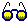

| Contact:
Igor Gresovnik |
|
Welcome to the Inverse home page! Inverse
is a general-purpose software for
solving optimization and inverse problems in science and
engineering. It is designed for research purposes
in various fields of optimization as well as for solving practical
problems.
Inverse is primarily constructed for operation in conjunction with a simulation programme, although stand-alone use is possible. Any simulation programme can be connected with Inverse using the provided general file interface (refer to the appropriate manual). A direct interface with a FEM simulation environment Elfen is currently being implemented, but is not yet available for external use. Hopefully direct interface modules with some other simulation programmes will be provided in the future.
Since a large amount of information resides on
the present pages, we tried to make
easier to navigate through. The data is organized
in a logical tree structure wher each page contains links to its sub-pages at the bottom.
Topics are listed down to the third level in a surveyable index which appears on the
left-hand side in the framed version of these pages (if you have
loaded the main page without an index, you can click here to
load the framed version with the index). As an alternative
to an index you can use the waymark page for navigation. Some pages
(like this one) contain navigation
tips gathered under a special sub-title.
To get a closer look at the programme, see the "Learning and Availability" page. Learning tips will help you to find the fastest way of learning how to use the software. For a lot of people a better way of learning about the software than reading manuals will be running the training examples which are available for downloading. To run these examples you will also need a version of Inverse for your machine. See the "Learning and Availability / Availability" page for details how to obtain the code for your machine!
The "Info Centre" page contains useful additional information about Inverse. You will find out there more about philosophy of Inverse, about strategy of further development and about partners with whom Inverse developing team cooperates.
On the "News &
Events" page you can follow the most important news related
to Inverse. The "Example
Gallery" page contains some example problems which were
solved using Inverse. On the "Links"
page you will find the collection of our links to pages with
various contents related to Inverse and activities of its
developing team.
|
|